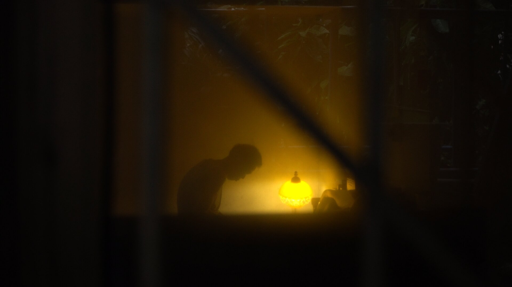

难 / Nan

2019 / 79:31/ HD video
Hunan Dialect / China / Color
A portrait that follows Nan, my uncle who lives with his elderly parents, during the last two years that the three share the same house together. In long, tightly framed shots, a picture emerges of three intimately interwoven lives: the gentle and touching bickering between Nan and his mother, the evenings in front of the television when time seems to stand still, and the minutes ticking by as Grandpa silently peels an apple. It is a meditation on time, disabilities, and the economies of care. A warm and at times humorous ode to informal caregiving and the strength of family ties.
-
" Zuqiang's film is neither long nor slow. It simply unfolds at the pace with which Nan and his parents move through the world—the rhythms to which anyone who is invited into their world would be asked to synchronize. Several scenes in the film follow Nan’s actions, sending our restless bodies out of sync. We learn about disability not only as symptoms in a body, but as social relationships—physical and temporal relationships that we too become implicated in. More than discerning narratives or plots, the work that the audience does in these scenes is about syncing with other(’s) rhythms. These are acts of love. The process is imperfect. " - Sindhu Thirumalaisamy